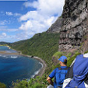
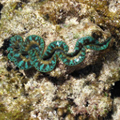

A World-Heritage listed site
Bird-watching

Lord Howe Island is Australia’s premier bird watching destination, with 14 species of seabirds breeding here in the hundreds of thousands.Between November to June you can watch Red-tailed Tropicbirds performing their balletic, airborne courting rituals from the Malabar cliffs. During the months of September through to May countless Shearwaters (known locally as Muttonbirds) return to the island at dusk each day.
Walking
Standing tall at 875 metres, Mt Gower is Lord Howe’s highest mountain. Rated as one of Australia’s best day walks, the Mt Gower hike is a challenging eight hour return trek, complete with rope-assisted climbs and dizzying drops. Walkers traverse around 14 kilometres across the mountain’s rugged terrain, encountering some of the island’s rarest plants and wildlife along the way.
Snorkelling
Lord Howe island is home to the world’s most southerly coral reef. Snorkel above colourful corals contained in the calm waters of the lagoon Hire snorkeling gear from the dive shops or at Ned’s Beach use the masks, fins, and snorkels stored there for the cost of a contribution to the ‘honesty box’. Body surf at Blinky Beach, or swim at Ned’s Beach.